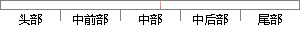

相同温度的黑体的辐射度之比）
片段位置图

相似结果
相似片段：
,并介绍作为基础数据的分光放射率光谱的测定系统和测定例。 S. Takeuchi ■分光放射率 Spectral Emissivity 放射率的定义是「放射体的辐射度与具有和放射体相同 温度的黒体的辐射度之比」 1) 。分光放射率是指「表示为各波长(波数或振动数)成分的函数的放射率」 1) 。 1) 黑体是指「完全吸収所有波长放射的假想的物体」 。根据普朗
| 对比库： | WriteCheck云资源库 |
| 来源： | www.shimadzu.com.cn 查看来源 |
| 发布时间： | 2010-08-28 |
| 相似率 | 100% （严重抄袭） |